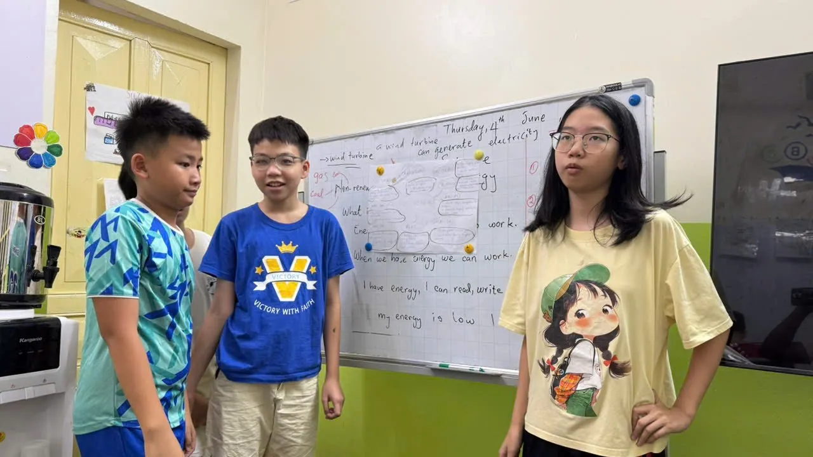

Who is SKY 1 for?
SKY 1 is an ELA (English Language Arts) class for Grade 5–6 students with advanced English. It's a particularly good fit if your child:
- Reads English texts well and can write a complete paragraph.
- Has outgrown school English and needs a more demanding environment.
- Is preparing for the Grade 6 entrance assessments at high-quality lower secondary schools.
- Is aiming for A2 Key (KET), B1 Preliminary (PET) or English competitions such as academic contests, IOE and Olympiads.
How is an ELA class different from a regular English class?
By Grades 5–6, the gap between “speaking English” and “learning in English” starts to show. An ELA class trains the second.
| Regular English class | SKY 1 ELA class |
|---|---|
| Short readings, multiple-choice questions | Academic texts of about 300 words: summarize, analyze, compare |
| Memorize topic vocabulary | Academic vocabulary learned in context and reused in reports |
| One paragraph from a model | Multi-paragraph reports with an introduction, body and conclusion |
| Answer set speaking questions | 3-minute presentations and Socratic discussion |
Why does this work better? See the seven research findings in What is ELA? ELA vs ESL.
What will my child learn in SKY 1?
Each unit is built around a Big Question — such as “How can technology help people?”, “What can we learn from nature?” or “What does it take to be a leader?” — and covers the four strands of the ELA standards:
Reading
Informational texts and literature: summarize a 300-word text in 5–6 points, tell fact from opinion, recognize cause and effect.
Writing
Multi-paragraph reports with an introduction, body and conclusion, using graphic organizers, citing sources and revising for cohesion.
Speaking & Listening
3-minute presentations with visuals, Socratic discussion, and peer assessment of talks against a rubric.
Language
Modal verbs, comparatives and superlatives, cause-and-effect connectives and academic vocabulary — practiced in the child's own writing.
Preparing for the Grade 6 entrance tests and Cambridge exams
Many of Hanoi's high-quality lower secondary schools admit Grade 6 students through assessment tests that include English. For 2026–2027, Cầu Giấy Lower Secondary School admitted students on the total of three assessments in Math, Vietnamese and English: more than 5,500 candidates sat them for 440 places, about 1 in 12.5. Schools such as Thanh Xuân and Nam Từ Liêm lower secondary also use assessment tests (Tiền Phong newspaper).
When every point counts, English is where a strong student can pull ahead. SKY 1 helps your child with:
- Fast, accurate reading of long texts — the base of every assessment.
- Grammar and vocabulary that hold up in context, not just rules learned by heart.
- Question types and test strategy for the English paper, timed and reviewed in detail.
- A Cambridge pathway by level: A2 Key (KET), then B1 Preliminary (PET), plus a foundation for English competitions.
Each school announces its own Grade 6 admission plan every year; check the official announcements for 2027–2028.
Textbook: Oxford Discover
Oxford Discover (Oxford University Press) builds every unit around a Big Question that sparks curiosity and lets students ask, investigate and answer their own questions. It combines inquiry-based learning with a structured grammar and skills syllabus, and develops four 21st-century skills: critical thinking, communication, collaboration and creativity. The course is mapped to the CEFR.
At HEC, Oxford Discover is the backbone; the teacher adds academic texts, Common Core ELA writing tasks for Grades 5–6 and exam practice.
Measurable goals
- Reading: summarize a 300-word text accurately in 5–6 points.
- Writing: reports of 10–12+ sentences with a clear introduction, body and conclusion, with visuals.
- Speaking: a 3-minute talk with eye contact and purposeful visuals.
- Language: accurate modal verbs, comparatives and superlatives in writing and speaking.
What does a course look like?
- Launch: a summary task and a speaking diagnostic to set each student's goals.
- Sprint 1: research a real-world problem; outline, write and revise a report so the paragraphs connect.
- Sprint 2: rehearse and deliver a 3-minute talk; classmates assess it against a rubric.
- Showcase: a product demo or poster session; self-assessment and teacher feedback.
- Next: Sanrio Grade 6 (academic writing) or the IELTS pathway in Sun when ready.
Who teaches your child?
Victor Moronu teaches every session. He was educated in the USA and holds a teaching degree and a New Jersey (USA) teaching certificate — an engineer turned teacher — and teaches to the US InTASC professional standards for teachers.
Every class also has a Vietnamese teaching assistant with a degree in English or education, who supports small-group discussion, marks writing and helps children with demanding tasks. In a 90-minute session, several groups talk and get feedback at the same time.
Hear an HEC student on loving a challenge
Jessica, an HEC student, talks in her own English about loving a challenge — unscripted.
Admission in 3 steps
- A free placement test to establish your child's current level.
- A minimum Cambridge English level — the test confirms your child has reached the class's entry level.
- A short interview with Victor, or a recommendation from your child's current teacher.
Classes stay at 12 students or fewer, so the teacher reads and responds to every piece of writing and every talk.
Standards and credentials
- Common Core ELA standards (USA)
- Cambridge English levels
- CEFR framework (matching the Cambridge levels)
- New Jersey–certified teacher
- Licensed by the Hanoi Department of Education and Training
FAQ
Who is the SKY 1 class for?
Grade 5–6 students whose English is already strong and who want to challenge themselves with academic texts, multi-paragraph writing and presentations, while preparing for Hanoi's Grade 6 entrance assessments or Cambridge A2 Key (KET) and B1 Preliminary (PET).
Does SKY 1 prepare students for the Grade 6 entrance tests?
Yes. Alongside the ELA program, Grade 5 students in SKY 1 practice the question types and test strategies for the English part of the Grade 6 entrance assessments at Hanoi's high-quality lower secondary schools. For 2026–2027, Cầu Giấy Lower Secondary School admitted students on the total of three assessments in Math, Vietnamese and English.
Does SKY 1 help with KET and PET?
Yes. The class follows Cambridge English levels; reading comprehension, paragraph writing and reasoned speaking make up most of A2 Key (KET) and B1 Preliminary (PET). The teacher advises each child on when to sit an exam.
Who teaches SKY 1?
Victor Moronu — educated in the USA, with a teaching degree and a New Jersey (USA) teaching certificate — teaches every session, with a Vietnamese teaching assistant who holds a degree in English or education.
What are SKY 1's schedule and fees?
Tuesdays 17:30–19:00 and Saturdays 16:15–17:45. 210,000 VND per 90-minute session, about 1,680,000–1,890,000 VND a month, billed only for sessions held, with a 5% sibling discount and currently no book fee.